새벽 한 시 반, 부엌문으로 드러갓다가 들켜 — 엉겁결에. 자백한 뒤 그는 형사에게 염주를 갓다 달라 하엿소.
그러나 — 그 시각, 그는 극장에 잇섯다 하엿고, 비명은 열한 시에 들렷소.序 · 프롤로그
電報東亞日報 編輯局 受소화 륙 년 팔월
釜山 草梁鐵道官舍朝鮮人 下女變死
부산 초량 · 철도 관사 · 조선인 하녀 · 변사
재구성그 여름, 편집국 책상 우에 전보 한 장이 노혓소.
스무 살 하녀가 — 제 방에서, 아츰 열 시가 되도록 이러나지 아넛다 하오.
주인은 집에 업섯고, 밧게서 드러온 자취도 업섯소.
나는 부산으로 내려갓소.
※ 이 이약이를 끌고 가는 「나」는 당시 지면을 바탕으로 꾸민 긔자요. 사건의 사실은 모두 당시 지면과 긔록에서 옮겻소.
사건 요지한눈에 보는 미제(未濟)
- 1팔월 일일 아츰
부산 초량정 철도국 관사에서 스무 살 조선인 하녀가 숨진 채 발견되엿소. 일본인 주인들은 그 일홈이 어렵다 하야 '마리아'라 불럿소.
- 2구월
일홈 업는 편지 두 통이 경찰서에 날아들엇소. 팔월 이십구일 새벽, 경찰은 주인집 부인 오하시 히사코를 잡아드렷소.
- 3그 뒤의 재판
히사코는 무죄. 이 년 뒤 잡힌 이노우에도 끗내 무죄. 벌 바든 이는 업섯소 — 그 밤 그 방의 일은, 아즉 아모도 모르오.
출처 · 동아일보 아카이브 (1931년 8월 4일 ~ 9월 16일자, 1933년 11월 10일자 지면) · 부산일보 「최학림의 잡설 부산사」(2017) · 전봉관 『경성기담』 · 한국사 데이터베이스
수수께끼이 지면이 쪼차갈 물음 셋
- 一
웨 그 밤만, 제 방이 아닌 방이엇나
남편이 떠난 뒤 아씨는 줄곧 응접실에서 잣소. 그런데 그 밤만은 — 하녀 방 바로 엽방에서 잣소. 그리고 아모 소리도 듯지 못하엿다 하오.
- 二
편지는 엇더케 그리 자세히 아랏나
사건 이틀 뒤 날아든 편지는 창 너머로 그 밤을 보앗다 하엿소. 물건을 버린 곳까지 적혀 잇섯소.
- 三
웨 아모도 벌 밧지 아넛나
히사코가 잡혓고, 이 년 뒤 이노우에도 잡혓소. 한 번은 무기징역까지 나왓소. 그러나 벌을 바든 이는 업소.
이 물음 셋을 품고 내려가시압. 답은 — 第十一話 판결 장에서 다시 맛나오.
第一話
활자가 된 아침
팔월 일일 아츰의 일은, 사흘 뒤 활자가 되엇소.
나는 그 첫 지면을 접어 품에 넛코, 초량으로 갓소.
소화 륙 년 팔월 사일 · 경성
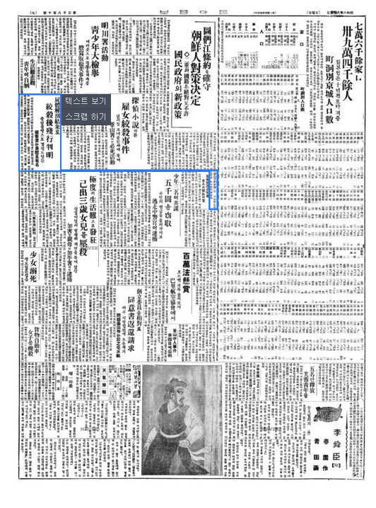
昭和 六年 八月 四日 · 東亞日報
第一報
한 하녀의 죽음이 처음 활자가 된 날
- 八月 一日 아츰, 초량뎡 철도관사에서 조선인 하녀 하나가 죽엇다.
- 일인 관리의 담장 안에서 난 일은, 담장 안에서 끗나기 쉬웠다.
- 사흘 뒤, 동아일보는 그 죽음을 활자로 박아 세상에 내노핫다.
- 그날부터 삼 년 — 동아일보는 이 사건에서 눈을 떼지 아니하엿다. 그러나 끗내, 범인의 일홈은 실리지 못하엿다.
- 第一報
- 1931. 8. 4
- 怪投書 公開
- 1931. 9. 16
- 이노우에 검거
- 1933. 2
- 이심 무죄
- 1934
第二話
관사 15호
담장 안에서 난 일은, 담장 안에서 끗나기 쉬웠소.
나는 그 집의 방을, 하나씩 세어 보앗소.
부산 초량정 · 철도 관사
사회면01현장 · 관사 15호
관사 15호 — 방마다 남은 이약이
그 밤의 집. 방을 누르면, 그 방에 남은 말이 나오오.
긔록 당시 지면 · 후대 정리 신문 · 책 · 사전 · 소문 확인 안 된 말
第三話
그날의 열두 시간
나는 그 하로를, 시계 바늘처럼 다시 세어 보앗소.
그 집에서 — 그 밤 깨어 잇든 것은, 누구엿는가.
소화 륙 년 칠월 삼십일일 · 비
사회면02그날 · 열두 시간
그날의 열두 시간
소화 륙 년 칠월 삼십일일 낫부터, 이튿날 아츰 열 시까지. 천천히 내려가며 — 누구의 말인지를 보시압.
- 낫기록
아씨가 마리아를 다리고 사진관에 가서, 함께 사진을 박엇소.
- 저녁 여섯 시진술 · 아씨
저녁밥 무렵 양복집 점원이 왓소. 「마리아가 고향 갈 때 입을 옷」이라 하엿소.
훗날 — 실제로 지은 것은 아씨 제 양복이엇소.
- 밤 아홉 시기록
마리아가 안방 이부자리를 펴고 인사하자 — 「피로할 테니, 래일은 늣게 이러나도 조타.」 처음 듯는 너그러운 말이엇소.
- 밤 아홉 시기록
그리고 아씨는 — 궂은비 나리는 공원으로 산보를 나갓소.
검사는 훗날, 이 산보를 「누군가를 다리러 간 길」이라 보앗소.
- 밤 열 시진술 · 아씨
아씨 취침. 그 밤만은 응접실이 아니라 — 하녀 방 엽방에서.
- 밤 열한 시증언
하녀 방의 전깃불이, 열한 시까지 켜져 잇섯소.
재현 그림 · 하녀 방의 전구 — 훗날 단 하나의 물증이 되엇소 - 열한 시 ~ 열두 시증언 · 부검
이웃집 하녀가 녀자의 비명을 드럿소. 부검이 본 죽은 시각과도 맛소.
- 열두 시진술 · 이노우에
그 시각 이노우에는 — 중앙극장에서 「요쓰야 괴담(四谷怪談)」을 보고 잇섯다 하오.
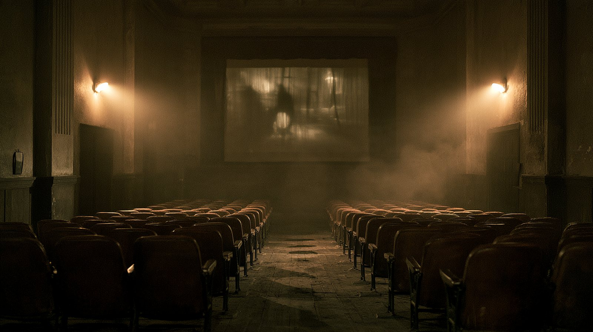
재현 그림 · 자정의 극장 - 새벽 한 시진술 · 아씨
아씨, 이러나 변소에. 「낫에 수박을 만히 먹엇소.」
- 새벽 한 시 반자백 · 이노우에
훗날 이노우에의 첫 자백이 말한 시각.
부검 · 이웃의 증언과 — 맛지 안소.
- 새벽 세 시투서
아씨, 다시 변소에. — 그리고 일홈 업는 편지가 「비명을 드럿다」고 한 시각.
부검 · 이웃의 증언과 — 맛지 안소.
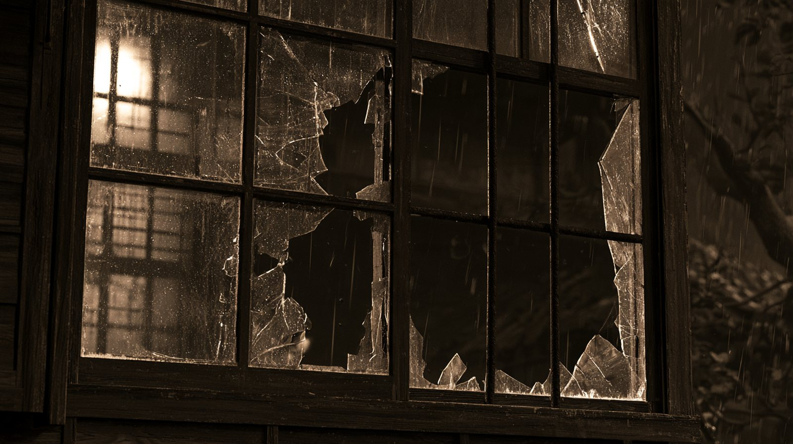
재현 그림 · 깨진 유리창 — 편지는 「유리창을 깨고 창살 한 개를 뽑앗다」 하엿소 - 아츰 여섯 시진술 · 아씨
아씨 기상. 창을 열고 신문을 읽고, 늘 둘이 하든 아츰 운동을 — 혼자 하엿소.
- 아츰 열 시진술 · 아씨
아씨가 하녀 방 문을 열엇소. 「실컷 자라 일러 둔 터라, 자고 잇스려니 하엿소.」
그 밤의 시각은, 셋이엇소
- 열한 시 ~ 열두 시이웃의 귀 · 부검
- 새벽 한 시 반이노우에의 첫 자백
- 새벽 세 시일홈 업는 편지
셋 가운데 둘은 — 거짓이오. 그리고 그 밤 내내, 벽 한 겹 너머의 아씨는 아모 소리도 듯지 못하엿다 하오.
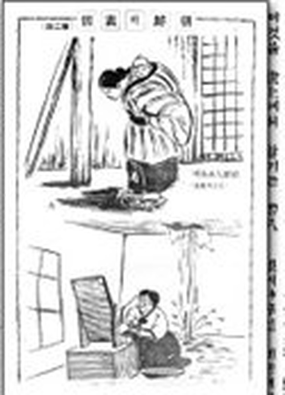
근거 · 『중앙』 1934년 3월호 「그로 100% 부산 마리아사건 공판기」 · 동아일보 1933년 12월 15~17일 공판 기사 — 『신동아』 2006년 1월호 「부산 마리아 참살 사건」(전봉관)에 옮긴 것을 바탕으로 함
第四話
여섯 주의 지면
날마다 원고를 경성으로 보냇소.
날마다 — 범인의 일홈 칸은 비어 잇섯소.
소화 륙 년 팔월 ~ 구월
사회면03보도 · 첫 륙 주일
동아일보가 쪼차간 긔록
첫 보도부터 투서 공개까지, 륙 주일 동안 여섯 번 실린 지면.
第五話
수첩 속의 사람들
그 밤 그 집 갓가이 잇섯든 이들.
나는 한 사람씩 일홈을 적고, 그 아래에 물음표를 그렷소.
긔자 수첩 · 재구성
第六話
두 통의 편지
그러든 어느 날, 경찰서에 일홈 업는 편지가 날아들엇소.
편지를 쓴 이는 — 나보다 만히 알고 잇섯소.
부산경찰서 · 괴투서
사회면04투서 · 일홈 업는 편지
두 통의 괴투서
목격담이엇는가, 꾸민 이약이엇는가. 확대경을 대어 필적을 보시압.
편지를 쓴 이는 잡혓스나, 죽인 이는 업섯소.
第七話
아씨의 진술
팔월 이십구일 새벽, 관사에 자동차 불빗이 드러섯소.
나는 그 녀자의 말을 — 한 줄씩, 긔록 엽헤 노하 보앗소.
부산경찰서 · 소화 륙 년 팔월 이십구일
사회면05진술 · 아씨의 말
진술서의 틈
아씨의 말 다섯 줄. 한 줄씩 눌러, 긔록과 대조하시압.
팔월 이십구일 · 새벽 한 시
모토하시(元橋) 검사가 경관 수십 명을 자동차에 태우고 관사를 에워쌌소. 압뒤로 경계선을 치고 — 뒷문으로 드러가, 아씨를 다려갓소.
供述調書오하시 히사코(大橋久子) · 서른여섯再構成재구성
「삼십일일, 마리아가 빨래를 하엿소.」
그날은 비가 와서, 빨래를 할 수 업섯소. 법뎡에서는 말을 바꾸엇소 — 「검사가 오기 전에 걷어치웠소.」
눌러 대조하시압「삼십일일, 두 차례 목욕을 하엿소.」
팔월 일일 검사가 보앗슬 때, 목욕통에는 물이 한 방울도 업섯소.
눌러 대조하시압「쓰레기 치우는 인부 소리에 잠이 깻소.」
부산부에 알아보니 — 그날 초량에는 청소 인부가 나가지 아넛소.
눌러 대조하시압「마리아 고향 갈 옷을 지으려 양복상을 불럿소.」
양복상이 치수를 잰 것은 — 아씨 제 옷이엇소.
눌러 대조하시압「그 밤, 아모 소리도 듯지 못하엿소.」
한 시와 세 시, 두 번 이러나 변소에 다녀왓소. 비명은 — 이웃집까지 들렷소.
눌러 대조하시압
0 / 5
그러나 — 물증도, 증인도, 자백도 업섯소.
- 구월 십칠일예심 회부
- 십이월 십사일일심 — 증거 불충분, 무죄
- 그 뒤검사의 공소 — 대구복심법원에서 기각
잡혀가서 무죄가 나기까지, 석 달이 걸리지 아넛소.
근거 · 『중앙』 1934년 3월호 「그로 100% 부산 마리아사건 공판기」 — 『신동아』 2006년 1월호에 옮긴 것 · 조서 모양은 재구성
第八話
세 가지 짐작
사건 두 해 뒤, 한 잡지가 세 가지 짐작을 적엇소.
나는 그것을 수첩 맨 뒤에 옮기고, 그 아래 적엇소 — 「확인되지 아넛다」.
『별건곤』 소화 팔 년 오월호
사회면06소문 · 담 너머의 말
잡지가 적은 세 가지 짐작
마리아의 죽음 뒤에 감추어진 것은 무엇이엇는가. 봉한 쪽지를 하나씩 펼치시압.
- 一
거절당한 사내
어떤 사내가 마리아에게 다가갓다가 — 응하지 아느니, 죽엿다.
동긔로 확뎡되지 아넛소 - 二
질투
주인과 마리아의 사이를 의심한 아씨가 — 질투 끗에 죽엿다.
동긔로 확뎡되지 아넛소 - 三
감추려 한 비밀
아씨와 다른 사내의 사이를 마리아가 알아 버려 — 둘이 입을 막앗다.
동긔로 확뎡되지 아넛소
세 말 가운데 어느 것도, 법정에서 증명되지 아넛소.
※ 『별건곤』 1933년 5월호(도일 · 都逸 글)의 세 가지 추리를 줄여 옮긴 것이오. 동아일보 긔사가 아니오.
第九話
세 번째 사람
경찰은 초량의 모든 사람의 글씨를, 하나하나 차저다니며 대어 보앗소.
한 달이 가고, 계절이 바뀌고 — 한 해가 저물엇소.
소화 칠 년 ~ 팔 년
사회면07세 번째 사람 · 이노우에
세 번째 사람
해가 바뀌고 또 바뀌엇소. 그리고 — 한 사내가 붓들렷소.
소화 칠 년 십이월 삼십일일 · 그해의 마지막 지면
「삼 년 미해결」
그해를 넘기는 「중요 사건」들 사이에, 작은 제목 하나가 끼어 잇섯소. 범인은 — 아즉 업섯소.
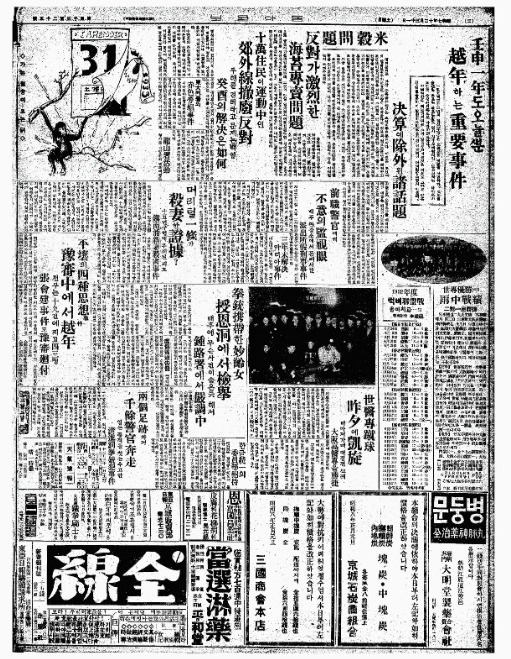
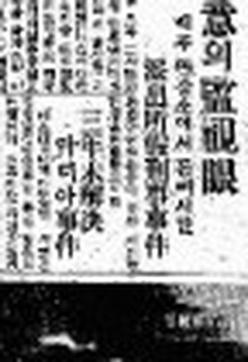
擴大소화 칠 년 십이월 삼십일일 · 석간 이면 오단
「三年未解決 『마리아』殺害事件」
원문 · 국사편찬위원회 한국사데이터베이스소화 팔 년 이월 십칠일
이노우에 슈이치로(井上修一郞)
철도국 공제조합 초량 배급소 직원. 룡산 시절부터 오하시 부부와 알든 사이.
형사의 쪽지 — 그를 가리킨 여섯 가지
- 一
그 날 저녁 여덟 시경, 관사 압흘 서성인 로이드 안경의 서른 살쯤 된 사내.
- 二
사건 뒤 — 머리를 류달리 짧게 깍앗소.
- 三
천리교에서 — 불교로 고처 미덧소.
- 四
일홈을 슈이치로(修一郞)에서 류우(隆雄)로 바꾸엇소. 까닭은 — 「사람을 죽일 불길한 일홈」이라서.
- 五
수시로 드나들든 그 집에 — 사건 뒤로는, 몃 번을 불러도 가지 아넛소.
- 六
검사가 동경 · 대판의 감뎡인에게 맛긴 필적 — 「투서와 일치」.
그리고 그는, 두 번 자백하엿소 — 두 번 다 달랏소
아씨와의 사이를 마리아에게 들킨 뒤, 둘이 입을 막기로 하엿다고. 밤 아홉 시 아씨가 공원에서 그를 다리고 드러왓다고.
검사국과 예심에서 — 그는 둘 다 부인하엿소.소화 팔 년 십일월 팔일 · 예심 종결
주범 — 히사코. 종범 — 이노우에.
그러나 검사는 — 「한 번 무죄가 난 이는 다시 세울 수 업다」며 아씨를 긔소하지 아넛소. 법뎡에 선 것은 이노우에 하나엿소. 이틀 뒤 지면은 적엇소 — 「대교 부인 돌연 석방에 부산 경찰은 낙담」.
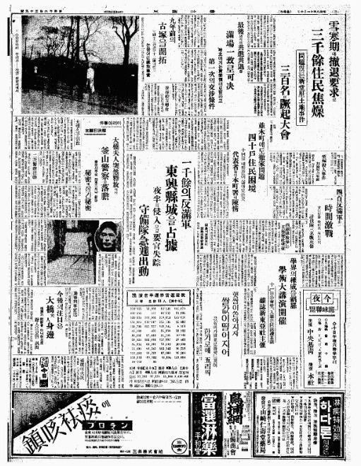
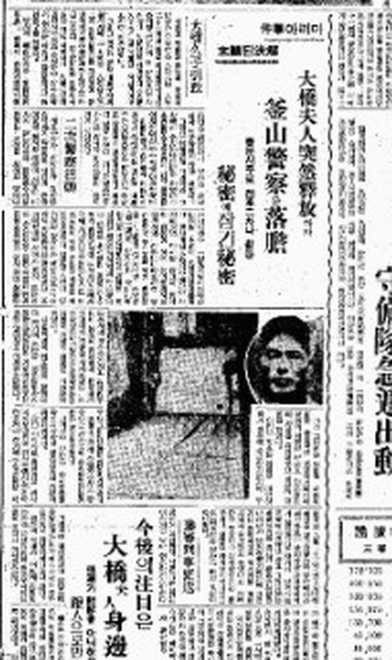
擴大소화 팔 년 십일월 십일 · 조간 이면 사단
「마리아事件 解決된 顚末(二)」
사진 — 마리아가 죽은 방, 그리고 용의자 이노우에
원문 · 국사편찬위원회 한국사데이터베이스근거 · 동아일보 1932.12.31 · 1933.11.10 지면 (국사편찬위원회 한국사데이터베이스) · 동아일보 1933.4.14 · 『중앙』 1934년 3월호 — 『신동아』 2006년 1월호에 옮긴 것
第十話
방청석
마리아가 죽은 지 이 년 다섯 달.
그 밤의 일을 아는 두 사람이 — 처음으로, 한 방에 섯소.
부산디방법원 · 소화 팔 년 십이월
사회면08공판 · 방청석에서
방청석
소화 팔 년 십이월 십사일 오전 열 시 · 부산디방법원 데이호 대법뎡
새벽부터 방청객이 몰려들엇소. 둘재 공판부터는 제비를 뽑아 드려보냇고, 긔자도 한 신문사에 한 사람뿐이엇소.
배석판사 한 사람을 빼면 — 판사 · 검사 · 변호사 · 피고 · 증인, 모다 일본인이엇소.
나는 맨 뒤 줄에 안저, 그 말을 바다 적엇소.
公判 速記동아일보 소화 팔 년 십이월 십오 ~ 십칠일 공판 긔사에서
재판장마리아가 죽든 삼십일일 밤, 무엇을 하엿는가.
피고 · 이노우에이웃이 영화를 보자 하야 — 중앙극장에 갓습니다.
재판장무슨 영화엿는가.
피고 · 이노우에「요쓰야 괴담」이엇고 — 그밧게는, 긔억이 업습니다.
재판장경찰 보고에는 — 오하시 부인과 한 우산을 쓰고 가더라는데.
피고 · 이노우에그러한 일은 업습니다.
재판장그 방 전구에, 피고의 지문이 잇다는데.
피고 · 이노우에만져 보지도 안앗는데 지문이 잇섯다니 — 무섭습니다.
재판장(투서를 내어 보이며) 이 편지 — 피고가 쓴 것이 아닌가.
피고 · 이노우에제가 쓰지 아넛습니다.
재판장이튿날, 증인석. — 그 밤, 아모 소리도 듯지 못하엿나.
증인 · 오하시 히사코깁히 — 잠들엇나 봅니다.
재판장하필 그날 아츰에만 실컷 자라 한 것은 — 우습지 아니한가.
증인 · 오하시 히사코실컷 자라고는 하엿스나 — 그런 마음은, 업섯습니다.
1 / 7
근거 · 동아일보 1933년 12월 15 · 16 · 17일 공판 기사 — 『신동아』 2006년 1월호에 옮긴 문답 가운데 일곱을 골라 옛 말투로 다시 적음 · 재구성
第十一話
판결
삼 년이 지나, 법정은 판결을 내렷소.
나는 방청석 맨 뒤에 안저, 그 말을 바다 적엇소.
부산지방법원 · 소화 륙 년 ~ 구 년
사회면09판결 · 두 번의 무죄
判決부산 · 두 번의 재판, 두 번의 무죄소화 륙 년 ~ 구 년
- 오하시 히사코 — 일심 무죄, 공소(控訴) 기각
- 소화 구 년 일월 이십일 · 검사 — 「이노우에 단독 범행」, 무긔징역 구형. 「히사코는 관계 업다.」
- 일월 이십칠일 · 이노우에, 일심 무긔징역 — 그러나 판결문에는 「주범 히사코, 공범 이노우에」
- 검사는 끗내 — 히사코를 긔소하지 아넛다
- 사월 삼십일 ~ 팔월 륙일 · 대구복심법원 — 이노우에, 무죄
- 배석판사 한 사람을 빼면 — 판사 · 검사 · 피고 · 증인, 모다 일본인이엇다
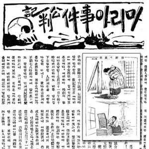
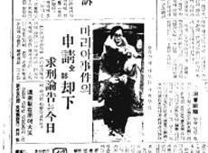
「웨 죄인을 그냥 두느냐 말이야.」
판결 이튿날 지면에 실린 거리의 말 · 동아일보 소화 구 년 일월 이십팔일
아모도, 벌 밧지 아넛소.
수수께끼 셋, 그 뒤
- 一제 방이 아닌 방未濟그 밤 그 방에서 무슨 일이 잇섯는지, 두 재판 모두 답하지 못하엿소.
- 二편지의 주인未詳필적으로 지목된 야마구치는 풀려낫고, 목격자라던 이는 열흘 뒤 범인이라 하엿소. 그가 엇더케 그리 자세히 아랏는지 — 모르오.
- 三벌 바든 이無업소. 주범으로, 종범으로 지목된 두 사람 모두 무죄로 풀려낫소.
근거 · 동아일보 1933.11.10 · 1934.1.20 · 1934.1.28 · 잡지 『중앙』 1934년 3월호 · 『신동아』 2006년 1월호 「부산 마리아 참살 사건」 · 부산일보 「주범과 종범 다 풀어준 1931년 '부산 마리아 참살 사건'」(2017.9.21)
第十二話
남은 일홈들
범인은 끗내 차저지지 안앗소.
그 대신 — 죽은 녀자에게, 다른 일홈들이 부텃소.
낙인 · 그 뒤의 세월
사회면10낙인 · 그 녀자의 주파수
약한 고리의 주파수 — 세월의 낙인
라듸오를 켜고 다이알을 돌리시압. 그 일홈이 지나온 세월이 잡히오.
범인은 끗내 차저지지 안앗소.
대신 세상은, 죽은 녀자에게 일홈 하나를 붙엿소 — 「치정」.
구십 년이 지나도 그 꼴은 되풀이되오. 약한 이가 사라지면, 세상은 범인보다 먼저 그 몸가짐을 뭇소.
여전히, 긔록은 우리 겨테서 소근거리고 잇소.
終章
그 자리
그리고 구십오 년.
그 비탈은, 아즉 거긔 잇소.
부산 동구 초량동 · 이제
사회면11그 자리 · 지금
그 자리 — 구십오 년 뒤
그 녀자가 짐을 지고 오르내리든 초량의 비탈. 사람은 바뀌엇고, 길은 남앗소. 그 밤을 기억하는 이는, 이제 업소.
※ 두 사진은 가튼 일대를 다른 때, 다른 각도에서 박은 것이오.
「마리아」는, 주인들이 부르기 쉽게 붓친 일홈이엇소.
그 녀자의 일홈은 — 변흥례.
여든여덟 해 뒤 — 한 무대가 그 녀자를 제 일홈으로 불럿소. (연극 「그때, 변홍례」 · 2019년 칠월 · 현대 재해석)
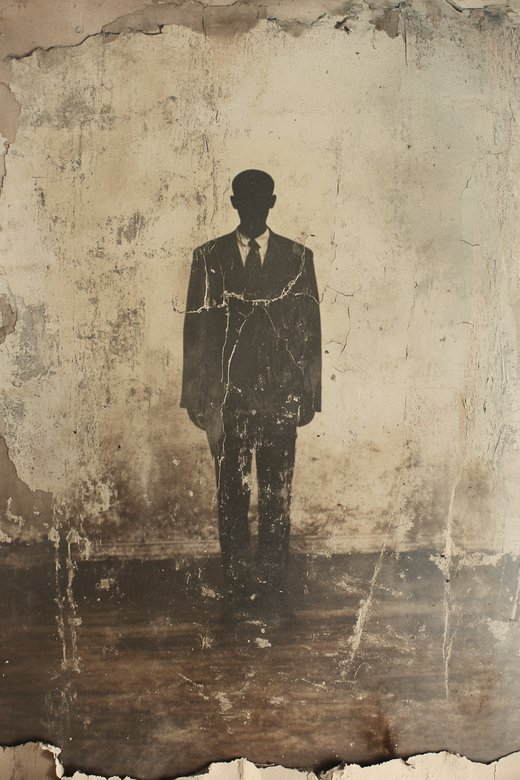
소화 륙 년 팔월 일일 밤 · 초량뎡 관사 십오호
- 주범도, 종범도 풀려낫소.
- 편지를 쓴 손도, 안경 쓴 사내도, 벽 너머의 귀도 — 모다 제 집으로 도라갓소.
- 그 밤 그 방에 누가 잇섯는지, 이제 대답할 이는 아모도 업소.
범인의 자리는,
아즉 비어 잇소.
사람을 차즘
소화 륙 년 팔월 일일 밤, 부산 초량뎡 철도관사 십오호 그 방에 잇섯든 이. 얼골도 일홈도 모름. 아는 이는 경성야록 편집국으로 알려 주시압.
— 구십오 년째, 아즉 아모 소식 업슴부산의 여름은 아즉 끗나지 아넛소.
다른 사건경성야록 일면에서 이어 읽으시압


이 긔사의 사료근거를 밝히오
동아일보 지면 (동아일보 아카이브)
- 소화 륙 년 팔월 사일자처음 실림 · 부검
- 팔월 십삼일자수사가 막힘
- 구월 이일자의문의 투서
- 구월 오일자수사를 넓힘
- 구월 십륙일자투서 내용 공개
- 소화 팔 년 십일월 십일자숨진 방 · 용의자 사진
그 밧긔 자료
- [실제 동아일보 기사] 1932.12.31 석간 2면 「三年未解決 『마리아』殺害事件」 · 1933.11.10 조간 2면 「마리아事件 解決된 顚末(二)」 — 국사편찬위원회 한국사데이터베이스
- [실제 동아일보 기사 · 재수록본] 1933.4.14 · 1933.12.15~17 공판 · 1934.1.20 · 1934.1.28 — 『신동아』 2006년 1월호에 옮긴 것
- [당대 잡지 기록] 『별건곤』 제63호(1933.5.1) 「三年霧中에 잠겨잇던 마리아 慘殺事件」 · 『중앙』 1934년 3월호 「그로 100% 부산 마리아사건 공판기」 · 『신동아』 1931년 12월호 삽화(하녀들의 삶 — 사건 그림 아님)
- [후대 정리] 『신동아』 2006년 1월호 「부산 마리아 참살(慘殺) 사건」
- [현대 연극·재해석 자료] 연극 「그때, 변홍례」(2019년 7월, 극단 하땅세) — 당대 자료 아님
- 부산일보 「최학림의 잡설 부산사 12」(2017.9.21) — 주범과 종범 다 풀어준 사건
- 전봉관 『경성기담』 — 부산 마리아 살해 사건
- 나무위키 「부산 마리아 참살사건」 — 괴투서 내용 · 재판 경과 대조용 (후대 정리)
- 더뮤지컬 — 연극 「그때, 변홍례」(극단 하땅세 · 연출 윤시중)
- 잡지 『중앙』 1934년 3월호
- 한국사 데이터베이스 — 같은 날짜 지면 대조
- 부산 옛 사진 · 오늘 사진 — 팀 수집 자료
- 음반 속 뒤 시대 사건 — 팀 리서치 자료 (1970 · 1980년대 · 2000년대 · 2023 · 2024~2026)
- 머리 그림 · 괴투서 · 비하인드 카드 — 재현(AI 생성), 그림마다 '재현' 표기
이 긔사가 지킨 것
- 일홈은 당시 지면과 재판 긔록, 후대 정리에 이미 공개된 것만 적엇소
- 혐의를 바든 이는 '무죄'로 끗낫슴을 함께 적엇소
- 일홈 업는 투서의 말은 주장이라 밝혀 적엇소
- 주검의 참혹한 대목은 옮기지 아넛소
- 소문(치정 · 내연)은 소문이라 따로 표시하엿소
- 음반 속 사건과의 '닮은 꼴'은 해석이라 밝히오